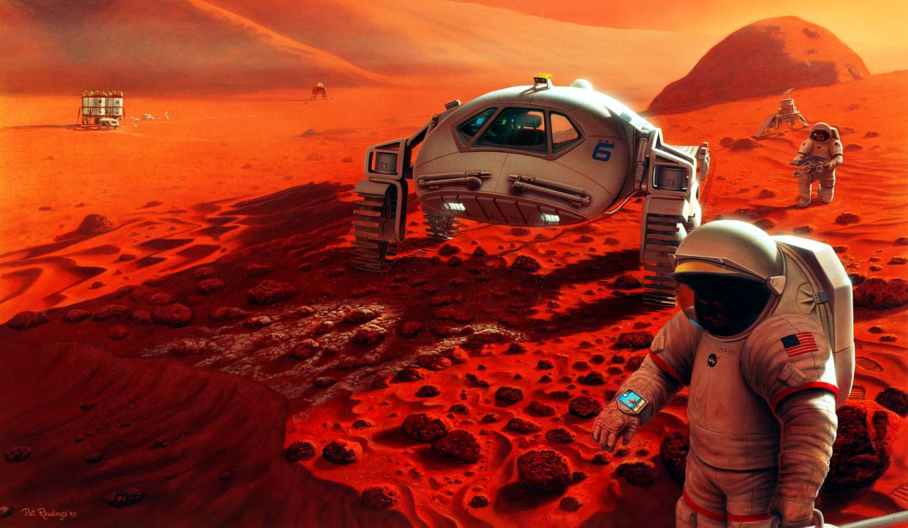
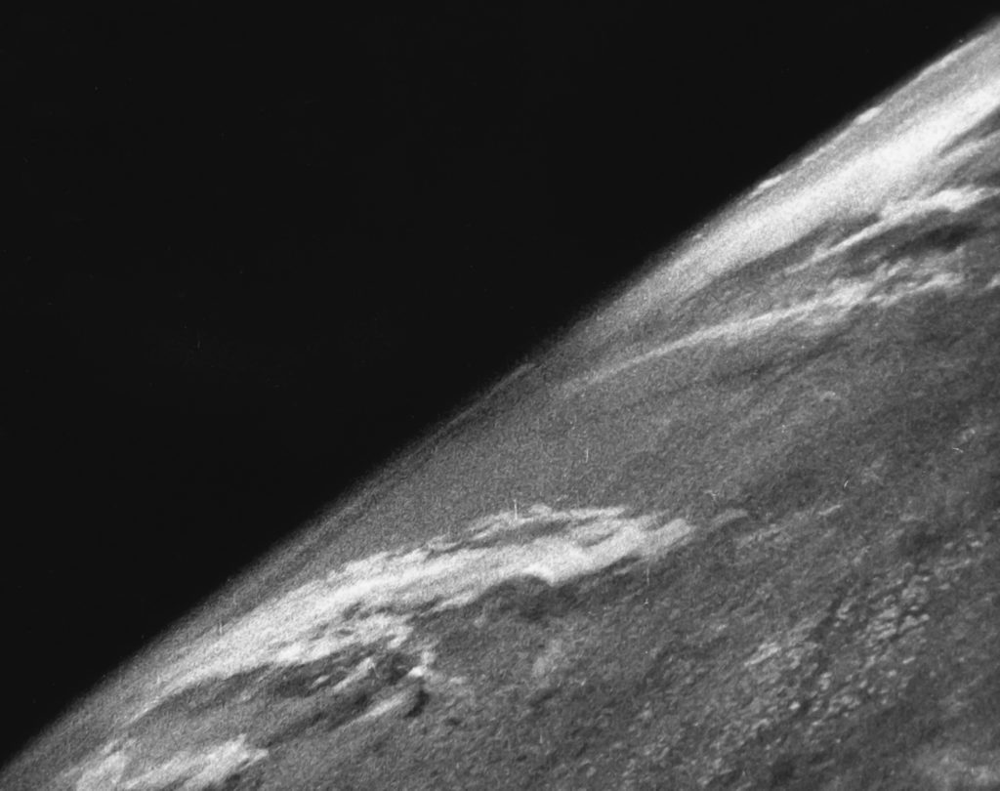
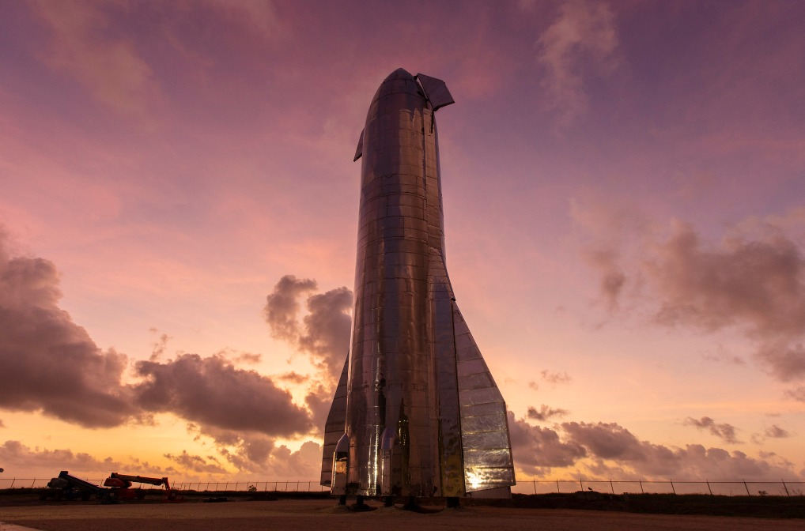
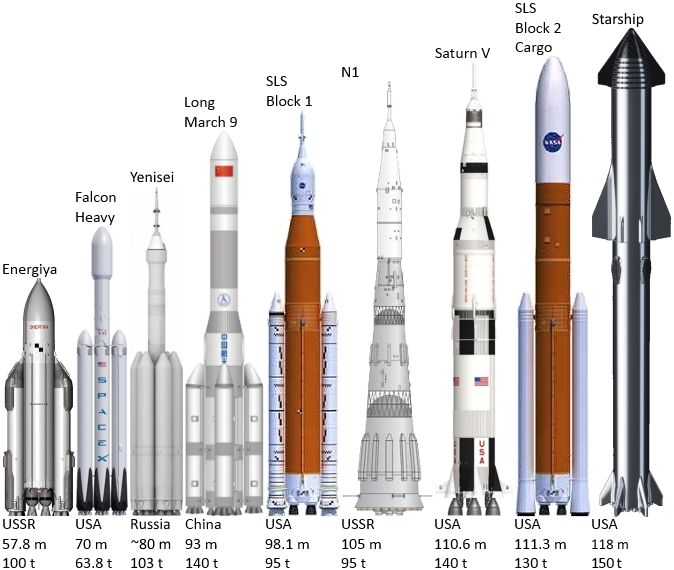
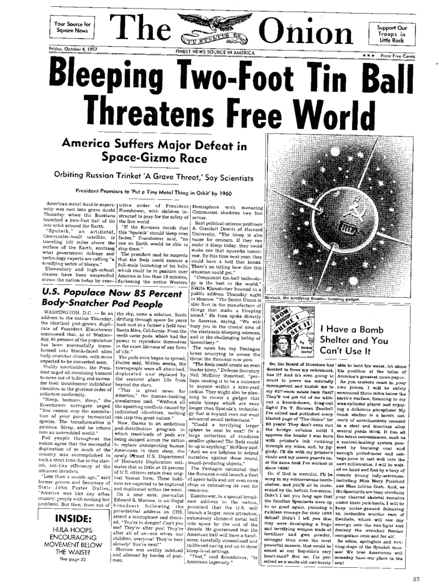

Колония на Марсе к 2050 году: построит ли Илон Маск город на Красной планете
SpaceX рассчитывает к 2050 году создать на Марсе колонию на миллион человек. Звучит абсурдно: осталось всего 30 лет, а до первого полета на Марс еще многие годы. Некоторые ученые, включая российских, считают планы Маска «фантазией» и «пропагандой». Тем не менее сама по себе постройка миллионной колонии на Красной планете вполне реальна. Разберемся, почему и отчего в это так трудно поверить остальному миру.
 С высокой долей вероятности колония на Марсе действительно появится и к 2050 году может достичь солидных размеров – хотя и, определенно, не будет иметь миллионного населения /© Wikimedia CommonsКосмос — это очень сложно, и хорошие результаты там выходят лишь у лучших конструкторов. Немецкие разработчики во главе с штурмбаннфюрером СС Вернером фон Брауном запустили ракету в космос в 1944 году, и лишь 25 лет спустя ракета того же конструктора доставила людей на Луну. СССР смог совершить первый орбитальный запуск в 1957-м, но так и не высадил людей на спутник.
США после отставки фон Брауна в космической сфере оказались на бобах: проект шаттла, разработанный уже американскими конструкторами, принес 14 жертв космических полетов — в 3,5 раза больше, чем у всех остальных стран, вместе взятых. Да еще стоил много дороже лунной программы, хотя летал только на близкие околоземные орбиты. В итоге от шаттлов пришлось отказаться, и пока американские астронавты отправляются в космос на российских кораблях, предки которых полетели туда во времена Королёва, соперника фон Брауна.
Миллионная колония на Марсе — это не высадка на Луну. Сам Маск считает: для этого надо будет выводить в космос 100 миллионов тонн грузов в год. Человечество сделало менее пяти тысяч орбитальных пусков за всю историю, доставило в космос сильно менее 50 тысяч тонн за последние полвека.
 Первое фото Земли из космоса, октябрь 1946 года. Сделано с борта трофейной ракеты «Фау-2», конструкция фон Брауна / © Wikimedia CommonsМаск хочет в год запускать в тысячи раз больше, чем люди запустили за весь космический век. Возникают вопросы. Реально ли это технически? Кто оплатит банкет? Возможно ли доставить миллион людей на Марс здоровыми и сделать там самодостаточную колонию? Наконец, более важный вопрос: осуществится ли это?
Может ли частная компания в год выводить в космос больше, чем все космические державы за полвека?
Сегодня все игроки, кроме SpaceX, летают в космос на полностью одноразовых ракетах с грузоподъемностью обычной фуры. Сделал сто «Протонов» — вывел в космос пару тысяч тонн. Falcon 9 повторно использует первую ступень (70% стоимости ракеты) по три-четыре раза. С ним это уравнение работает иначе: построил 50 первых ступеней — вывел в космос ту же пару тысяч тонн.
 Starship Mk1. Финальная версия носителя будет весить пять тысяч тонн при высоте 118 метров. Это сделает его крупнейшим в истории человечества / ©flickr.com/Official SpaceX PhotosНо Falcon скоро исполнится десять лет, и для SpaceX это довольно старая технология. В прошлом году компания впервые оторвала от земли демонстратор Starship, ракеты и корабля (вторая ступень ракеты у него и есть корабль), из нержавеющей стали. Он использует никогда не летавший до этого метановый ракетный двигатель (советские прототипы метановых двигателей проходили лишь наземное тестирование). СH4 вполне можно получать на Марсе, что решает вопрос о том, откуда брать топливо для обратных полетов на Землю.
Что более важно, обе ступени Starship проектируются как многоразовые. Причем не так, как первая ступень Falcon 9, а с живучестью выше 100 вылетов до профилактического ремонта. Общий их жизненный цикл задуман как у авиалайнеров: по 20 лет службы — и это при трех полетах в день.
Теоретически это достижимо. Керосиновый ракетный двигатель Falcon 9 ограничивает многоразовость: горение керосина оставляет много сажи. Метан сажи не оставляет, поэтому двигатели Starship действительно будут более многоразовыми.
Другая проблема Falcon была в том, что повторно используемой была только первая ступень. Ракеты Маска садятся на хвост, тратя топливо на посадку. Если спасать еще вторую ступень (~25% стоимости ракеты), то обе ступени потратят столько топлива, что выводимый в космос груз станет слишком маленьким.
Starship решает проблему второй ступени за счет невиданной в истории космонавтики схемы торможения. Его вторая ступень при входе в атмосферу будет разворачиваться брюхом и тормозить о воздух своей широкой стороной, а не лететь к Земле вертикально, как лом. Это действительно новый ход, который позволяет использовать меньше топлива для торможения.
Новый носитель делают из обычной нержавейки, которую сваривают (это проще клепки). На единицу массы новинка заметно дешевле ракет из алюминиевых сплавов. И делать ее можно не на обеспыленных сборочных мощностях за миллиарды долларов, как у конкурентов, а в обычных ангарах. Значит, Starship будет стоить примерно как обычная ракета, хотя выводить в космос уже на первом этапе сможет 100 тонн, а на втором, финальном — 150 тонн.
За счет дешевых материалов и полной многоразовости один полет Starship должен стоит два миллиона долларов (огрублено: пара сотен миллионов долларов стоимости системы делится на сотню полетов до ремонта). Два миллиона долларов за 100 тонн — это два триллиона за 100 миллионов тонн. Именно столько, 100 миллионов тонн в год, по расчетам Маска, нужно на быстрейшее развертывание крупной колонии на Марсе.
 Сравнение тяжелых ракет разных эпох. Слева направо: “Энергия”, Falcon Heavy (крупнейшая из существующих ракет), будущий российский “Енисей”, SLS NASA, советский лунник Н-1, американский лунник “Сатурн-5”, SLS в самой крупной модификации и Starship / © Wikimedia CommonsНо разве люди на Марсе не умрут от радиации?
Доктор физико-математических наук Игорь Митрофанов не так давно отметил, что самая большая проблема освоения Марса — радиация. И это не излучение на поверхности самой планеты — от него можно укрыться в подповерхностных убежищах или просто обсыпать жилые модули грунтом. Куда опаснее доза, которую экипаж получит за несколько месяцев пути к Марсу.
«На это нельзя пойти, это будет противоречить, условно говоря, нормам охраны труда, поскольку это не военная обстановка, отправлять людей на такой риск просто никто не разрешит. Если Маск отправит людей, их родственники смогут подать на него в суд», — утверждает ученый.
От слов обратимся к цифрам. Конкретно NASA для астронавтов на МКС считает нормой все, что не выше 0,5 зиверта в год — это равно цифрам «Роскосмоса». За время полета Curiosity к Марсу (180 дней) приборы на борту аппарата измеряли космическое излучение. Согласно полученным данным, астронавты на месте марсохода за полгода пути получили бы 0,33 зиверта. На поверхности Красной планеты тот же марсоход зафиксировал 0,23 зиверта в год.
То есть среднегодовое облучение при путешествии к Марсу и пребывании там — порядка 0,45 зиверта в год, на 10% ниже нормативов как «Роскосмоса», так и NASA. Напомним: чтобы умереть с вероятностью 50%, надо за считанные часы получить 4-5 зиверт. Если облучение не разовое, а хроническое, человек переживает даже очень высокие дозы: Альберт Стивенс, на котором ставили такой эксперимент в США, прожил 21 год, получая 3 зиверта ежегодно (всего 63 зиверта). Врачам так и не удалось найти у него признаков проблем со здоровьем: он умер в 79 лет.
Общее количество радиации, которое NASA считает допустимым для мужчин, — от 1,5 зиверта (в возрасте до 25 лет), до 2,5 — для 35-летних, 3,25 — для 45-летних и 4,0 зиверта для 55 лет. То есть даже нереалистично молодой астронавт может провести на Марсе пару лет уже в рамках существующих нормативов, а 35-летний без проблем со стороны радиации может работать там четыре года. Все это — не упоминая того факта, что реальный колонист на четвертой планете будет треть времени проводить там, куда радиация не дотянется.
Легко видеть, почему Игорь Митрофанов ограничился общими словами и не привел конкретные цифры: получается, на это можно пойти и никто за это судить не будет.
В чем причина, по которой тезис о радиации так часто всплывает в речах скептиков марсианской колонизации? Здесь следует вспомнить общую обстановку в мировой космической индустрии. Что будет после начала полетов Starship? Полторы сотни тысяч работников «Роскосмоса» окажутся под серьезным психологическим давлением. Получится, что компания, которой нет 20 лет, имеющая в 20 раз меньше сотрудников и даже меньший, чем у «Роскосмоса» объем средств, смогла создать нечто, что доставляет грузы на орбиту куда дешевле, чем российские ракеты.
 В 1957 году советский космический успех вызвал в США «спутниковый шок» (в заголовках западных газет спутник «угрожал свободному миру»). Дело было не только в том, что космические успехи трудно отделимы от военных, но и в том, что сам факт научного и технического первенства Запада был поставлен под сомнение. Полеты Starship станут крупной моральной катастрофой для NASA и «Роскосмоса», поэтому мы еще долго не услышим от них ни одного доброго слова об этом проекте / © Wikimedia CommonsЧто в такой ситуации остается делать тем, кто связан с «Роскосмосом»? Верно: пытаться показать, что планы SpaceX все равно не нужны и ошибочны. Что-то такое все вокруг видели несколько лет назад, в период, когда российские специалисты дружно сомневались в возможностях компании Маска вернуть на Землю первую ступень Falcon.
И увидим это еще не раз: первый вылет Starship, первый облет им Луны, первый полет к Марсу — все это будет проходить на фоне отсутствия у России чего-либо сопоставимого с новым носителем. Стоит ожидать потока негативного пиара от отечественных ученых инженеров в сторону SpaceX.
Впрочем, то же мы увидим и по ту сторону океана: NASA в моральном отношении тоже окажется на дне в случае успеха программы Starship. Одноразовая SLS, которую агентство разрабатывает много лет, планируют запускать по полтора миллиарда долларов за рейс — в десятки, а то и в сотни раз дороже Starship. NASA уже сейчас говорит, что планы Маска чересчур смелые. И о том, что радиация на пути к Марсу высокая, отчего лететь туда опасно — но, что характерно, специалисты агентства никогда не называют конкретного уровня этой радиации.
В NASA сидят милые, но отставшие от жизни люди, поэтому там не знают, что в эпоху сай-хаба научные работы, опирающиеся на данные от насовского же марсохода, доступны каждому желающему. Поэтому по-детски наивная пропаганда «на Марс все равно нельзя отправлять людей» не работает и не сработает. Как мы видим, в отношении SpaceX западный и российский госкосмос едины. Поэтому позиция Митрофанова вполне логична и понятна.
Колония на Марсе будет — хотя мы и не верим в миллион человек к 2050 году
Определенно, довести Starship, который только в этом году планирует первый полет в космос, будет недешево и сложно. Но опыт работы над Falcon — где SpaceX показала себя самым быстро развивающимся в плане технологий игроком на космическом рынке — убеждает, что это реально. В первой половине 2020-х Starship будет готов к полетам, и к 2030 году люди действительно могут впервые отправиться к Марсу.
Мы сильно сомневаемся, что к 2050-му на четвертой планете будет колония в миллион человек. Для запуска процесса терраформирования нужно намного меньше людей, а вот затраты на многолюдное поселение будут заметно выше. Тем не менее там будет немало тысяч человек. Сейчас это кажется нереалистичным только потому, что наши существующие средства полетов в космос технически напоминают каравеллы Колумба. Но всегда стоит помнить, что от них до появления огромных океанских галеонов прошли считаные десятки лет.